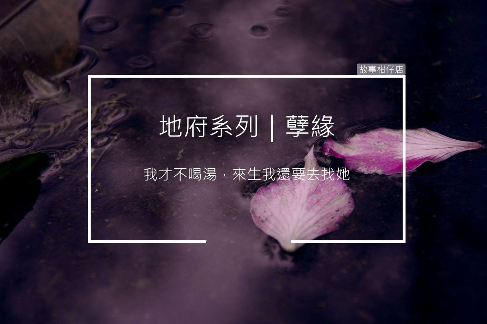

孽緣
2018-08-17

黑貓：你們部門的工作主要是什麼呢？
孟婆助理：我們的工作除了盯住亡魂把湯喝乾淨，也常常需要安撫突然失控的，甚至追緝偷跑、不願意喝湯的。
〈孽緣〉
「孟...孟婆大人，那個...那個......」
湯池邊，一名青面鬼卒躬身站在簾幕外，支支吾吾地向裡頭報告。
「說。」簾幕內傳來孟婆慵懶的聲音。
「奈何橋......殉情的男魂，不喝湯......鬧...鬧成一團......」青面鬼卒臉色發青地回話，持著鐵戟的雙手還微微顫抖。
「養你們這些混飯吃的，」孟婆撩起濕髮，隨手拾了池邊的落花，別在鬢上，語氣平淡地命令：「去現場。別比我晚到。」語畢，孟婆便披上薄紗，騰空越向天際。
奈河橋邊，封鎖線長長拉起，入口擠滿鬧騰的亡魂。橋上，一名男性亡魂死命抓著欄杆，口中不斷大吼大叫：
「我不！我才不要忘記小芬！」
幾名鬼卒團團圍著他，有的抓手，有的抓腳，男魂緊抱著欄杆的手臂卻是紋絲不動，只有繫在腕上一條豔豔的紅繩，在風中不斷飄搖。
「憑什麼！我們一起死的，她卻被擋在鬼門關外！我才不喝湯，來生我還要去找......」
男魂正喊得聲嘶力竭，突然間卻沒了聲音，兩手一鬆暈厥在地。
只見孟婆一個飛身落下，剛劈下的掌力紅辣辣地烙在男魂的後頸。
「啐！」孟婆怒目掃視四周，鬼卒們趕緊一擁而上，撬開男魂的嘴，把孟婆湯呼嚕嚕地灌進去。
癱倒的男魂幽幽睜開眼，一雙滿布血絲的瞳孔漸漸變得空洞，鬼卒們連忙將他拖進投胎隊伍裡。
一陣熱風吹來，男魂猛地瞪大了眼睛，旋即失去了意識。手腕上的紅繩倏地化作一條紅蛇，狠狠地印在他的腕上，成了一道殷紅的印記。
「冤孽！」孟婆悶哼一聲，便殺氣騰騰地往鬼卒們的方向走去，鬢上的彼岸花，不知何時已靜靜地躺在奈何橋上。
天靈靈、地靈靈、妖魔鬼怪都裝瓶！
鬼怪酸甘甜，都在故事柑仔店～
★ 更多的孟婆